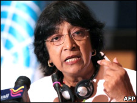

پذيرش > اخبار > نگرانی کمیسر حقوق بشر سازمان ملل از ’موج اعدام در ایران’


 نگرانی کمیسر حقوق بشر سازمان ملل از ’موج اعدام در ایران’ نگرانی کمیسر حقوق بشر سازمان ملل از ’موج اعدام در ایران’
13 بهمن 1389 - - نسخه قابل چاپ
بی بی سی: کمیسر عالی حقوق بشر سازمان ملل از افزایش شمار اعدام ها هفته های اخیر در ایران ابراز نگرانی عمیق کرده است.
روز چهارشنبه، 13 بهمن (2 فوریه)، متن بیانیه ناوی پیلای، کمیسر عالی حقوق بشر سازمان ملل متحد در اختیار رسانه های گروهی قرار گرفت که در آن نسبت به "افزایش قابل توجه در شمار اعدام ها در ایران از آغاز سال جاری (میلادی)" ابراز نگرانی عمیق شده است.
در این بیانیه آمده است که براساس گزارش های انتشار یافته در رسانه های همگانی ایران، تنها در ماه ژانویه سال جاری دست کم شصت و شش نفر در ایران اعدام شده اند هر چند برخی منابع، رقم واقعی اعدام های اخیر در این کشور را بیش از این دانسته اند.
براساس بیانیه کمیساریای عالی حقوق بشر، خانم پیلای گفته است: "ما بارها و بارها از ایران خواسته ایم تا اعدام ها را متوقف کند و من از اینکه ظاهرا مقامات ایرانی، به جای توجه به این درخواست، به کاربرد بیشتر مجازات اعدام روی آورده اند عمیقا متاثرم."
خانم پیلای به خصوص تاثر خود را نسبت به اعدام سه فعال سیاسی به اسامی جعفر کاظمی، محمد علی حاج آقایی و مرد دیگری که نام او فاش نشده، ابراز داشته است.
وی گفته است که این سه نفر به ارتباط با احزاب سیاسی غیرقانونی متهم بودند و ماه گذشته به اتهام "محاربه" یا "دشمنی با خدا" به چوبه دار سپرده شدند.
کمیسر عالی حقوق بشر سازمان ملل متحد تاکید کرده که "مخالفت سیاسی، جرم نیست" و افزوده است که ایران از امضاکنندگان معاهده بین المللی حقوق مدنی و سیاسی است که به منظور تضمین آزادی بیان و اجتماعات در کشورهای عضو تصویب شده است.
خانم پیلای، که ریاست نهاد اصلی سازمان ملل در دفاع از حقوق بشر را برعهده دارد، گفته است: "اقدام به حبس افراد به دلیل ارتباط با گروه های مخالف حکومت مطلقا قابل قبول نیست چه رسد به اعدام به خاطر داشتن دیدگاه یا گرایش سیاسی."
این مقام سازمان ملل همچنین دو مورد اجرای احکام اعدام در ملاء عام را تقبیح کرده و یادآور شده است که قوه قضائیه جمهوری اسلامی در بخشنامه ای در سال 2008، این روش اجرای احکام اعدام را منع کرده بود.
خانم پیلای دیدگاه دبیرکل سازمان ملل در این زمینه را متذکر شد که گفته است: "اعدام در ملاء عام ماهیت ظالمانه، غیرانسانی و تحقیر آمیز این نوع مجازات را تشدید می کند و صرفا می تواند تاثیری مغایر شئون بشری بر قربانی این نوع مجازات، و تاثیری خشونت افزا بر ناظران آن داشته باشد."
درخواست لغو مجازات اعدام
ناوی پیلای همچنین گفته است که از تعداد زیاد افرادی که در جمهوری اسلامی ایران به اعدام محکوم شده و در انتظار اجرای حکم به سر می برند، از جمله زندانیان سیاسی، محکومان پرونده های قاچاق مواد مخدر و مجرمان نوجوان بیمناک است.
این مقام سازمان ملل گفته است که کشورهای مختلف جهان عموما به سوی لغو مجازات اعدام از طریق تغییر قوانین کیفری و یا رویه های قضایی حرکت می کند و از ایران خواسته است تا اجرای احکام اعدام را به حالت تعلیق در آورد و به اقدامات لازم برای لغو این مجازات دست بزند.
خانم پیلای خطاب به دولت ایران گفته است: "دست کم از حکومت ایران می خواهم ضوابط بین المللی در تضمین رویه های قضایی ناظر بر حفظ حقوق محکومان به مجازات اعدام را رعایت کند و به سوی محدود کردن کاربرد این نوع مجازات و کاهش شمار جرایمی که برای آنها مجازات اعدام پیش بینی شده گام بردارد."
بیانیه کمیساریای حقوق بشر سازمان ملل می افزاید که کمیته نظارت بر رعایت معاهده بین المللی حقوق مدنی و سیاسی همواره بر این نظر بوده که مجازات اعدام به منزله محروم کردن خودسرانه فرد از حق حیات و در نتیجه، مغایر مفاد این معاهده است مگر اینکه در این زمینه، ضوابط بسیار سختگیرانه ای رعایت شده باشد.
از جمله این ضوابط این است که حکم اعدام تنها در مورد مرتکبان جدی ترین جرایم صادر شود، صدور این حکم اجباری نباشد و تنها پس از طی کامل و دقیق مراحل قضایی، از محاکمه گرفته تا تجدید نظر، به کار گرفته شود.
درعین حال، کمیته نظارت بر رعایت معاهده بین المللی حقوق مدنی و سیاسی از لغو مجازات اعدام به هر شکل و صورت حمایت می کند.
بیانیه کمیساریای عالی حقوق بشر سازمان ملل در حالی انتشار می یابد که در هفته های اخیر، مقامات قوه قضائیه ایران از اجرای پی در پی احکام اعدام خبر داده است.
اخیرا کمپین بین المللی حقوق بشر در اطلاعیه ای اعلام کرد که تنها در دوره یکماهه منتهی به 29 دیماه، نود و هفت حکم اعدام در نقاط مختلف به اجرا گذاشته شده است.
دلیل اقدام قوه قضائیه ایران برای افزایش شدید شمار اعدام ها در هفته های اخیر معلوم نیست اما مخالفان حکومت گفته اند که نهادهای امنیتی جمهوری اسلامی با این اقدام در صدد ایجاد هراس و جو ارعاب در کشور هستند.
مقامات قضایی جمهوری اسلامی نسبت به این اتهام واکنشی نشان نداده اند اما رسانه های طرفدار حکومت انتقاد بین المللی از صدور و اجرای مجازات اعدام را محکوم کرده اند.
ارسال به
بالاترین
،
توییتر
،
فریندفید
،
فیسبوک
در همين بخش :
 پروین ذبیحی برنده جایزه حقوق بشری سازمان غيردولتى اتريشى سودويند شد پروین ذبیحی برنده جایزه حقوق بشری سازمان غيردولتى اتريشى سودويند شد
پخش کارت پستال و بروشور در روز جهانی زن در تهران
تمدید زمان برای امضای بیانیهی جمعی از فعالان زن به مناسبت هشت مارس
مجوزی که در نطفه خفه شد
بیش از 2000 امضا در اعتراض به تبعیض های آموزشی به مجلس تحویل داده شد
ديگر بخش ها :
طرح یک میلیون امضا
|
مقالات
|
سایت نوشته ها
|
اخبار
|
گزارش كمپين
|
گفت و گو
|
علیه سکوت
|
كوچه به كوچه
|
نامه های شما
|
گزارش ویژه
|
گفتگو با اعضا
|
ویژه سالگرد کمپین
|
تصویر برابری
|
دل آرام علی
|
تریبون
|
مقالات
|
تاریخ شفاهی
|
خارج از چارچوب
|
کتابخانه
|
درباره کمپین
|
کمپین در شهرها
|
کمپین در بند
|
صدای تغییر
|
ویژه 22 خرداد
|
لایحه حمایت از خانواده
|
گالری
|
عشا مومنی
|
امیر یعقوبعلی
|
خدیجه مقدم
|
راحله عسگری زاده و نسیم خسروی
|
پروین اردلان،جلوه جواهری، مریم حسین خواه، ناهید کشاورز
|
زینب پیغمبرزاده
|
سعیده امین، سارا ایمانیان، محبوبه حسین زاده، ناهید کشاورز و همایون نامی
|
احترام شادفر
|
نسیم سرابندی زاده،فاطمه دهدشتی
|
وبلاگ مهمان
|
پرونده خرم آباد
|
دستگیری ها
|
مریم مالک
|
پرستو اللهیاری
|
مهرنوش اعتمادی
|
سمیه رشیدی
|
Other Languages
|
همراهان
|
«فراخوان کمپین ده روز با بهاره هدایت»
| English
|